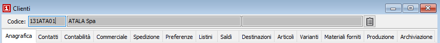

Il pulsante
consente di richiamare la procedura Ricerca documenti/movimenti
preimpostando i parametri di selezione.
Il pulsante
consente di richiamare la procedura Ricerca documenti/movimenti
preimpostando i parametri di selezione.Introduzione
L'anagrafica clienti è utilizzata praticamente in tutte le procedure di OS1.
Ogni cliente richiede un codice alfanumerico di otto caratteri. Occorre evitare tuttavia l'utilizzazione di caratteri particolari quali ‘, “.
Entrando nella finestra video di manutenzione clienti, il cursore si posiziona sul campo "codice", dove viene visualizzato il primo codice. Occorre comunicare al programma quale azione si vuole intraprendere:
interrogazione (premendo il tasto F9 per la ricerca) e scegliendo nella finestra di ricerca, scorrendo le righe oppure digitando in tutto o in parte il codice o la descrizione, il cliente da trattare. A conferma si chiude la finestra di ricerca e il codice del cliente ricercato viene visualizzato nel campo "codice". Qui occorre definire l’operazione da effettuare, che può essere variazione, cancellazione, duplicazione o inserimento (queste ultime due con l’ovvia digitazione di un nuovo codice cliente);
inserimento: premere il tasto F4 oppure cliccare con il mouse sul bottone Nuovo; appare il messaggio "inserimento" sulla barra del titolo, il campo "codice" si svuota ed è possibile digitare il codice del nuovo cliente da inserire; al termine dell’inserimento, occorre confermare il salvataggio premendo il tasto F10 oppure cliccando con il mouse sul bottone Salva;
variazione di un cliente esistente: ricercare il codice del cliente da modificare come già descritto per l’interrogazione, premendo il tasto F3 oppure cliccando con il mouse sul bottone Modifica appare il messaggio "modifica" sulla barra del titolo. Assunto il codice del cliente da modificare, è possibile portarsi sui vari campi per effettuare la variazione. Al termine dell’inserimento, occorre confermare il salvataggio premendo il tasto F10 oppure cliccando con il mouse sul bottone Salva;
cancellazione di un cliente esistente: ricercare il codice del cliente da modificare come già descritto per l’interrogazione, quando il codice del cliente da cancellare è visualizzato nel campo "codice", cliccare sul bottone Elimina.
duplicazione di un cliente esistente: ricercare il codice del cliente da modificare come già descritto per l’interrogazione. Premere la combinazione di tasti CTRL+N: il programma azzera il contenuto del campo codice, ma lascia completamente compilati tutti gli altri campi, disponendosi in situazione di inserimento. È quindi possibile inserire il codice del nuovo cliente ed eventualmente modificare secondo necessità i valori dei campi residui oppure confermarli se congruenti con il nuovo cliente. Al termine dell’inserimento, occorre confermare il salvataggio premendo il tasto F10 oppure cliccando con il mouse sul bottone Salva.
copia anagrafica da fornitori (F11): in stato di inserimento è possibile copiare i dati da un codice fornitore; premendo il tasto F11 viene richiesto il codice del fornitore che sarà utilizzato per la copia dei dati, la pressione del pulsante Esegui dà il via alla copia.
Non è possibile cancellare il cliente se lo stesso è già stato utilizzato anche per una sola registrazione contabile: occorrerà in tal caso procedere attraverso gli appositi programmi di servizio.
Sulla tool bar sono inoltre attivi i bottoni Stampe di spool (Shift+F2), Anteprima di stampa (F2), Stampa (Ctrl+F2).
Il pulsante
consente di richiamare la procedura Ricerca documenti/movimenti
preimpostando i parametri di selezione.
La gestione delle informazioni avviene all'interno delle seguenti “linguette”:

Ciascuna “linguetta” contiene informazioni specifiche per i vari moduli di programma. È quindi possibile che nella Vostra installazione non siano visibili alcune linguette. È inoltre possibile la presenza della linguetta “Dati estesi” se il Vostro programma utilizzasse specifiche modifiche all’anagrafica clienti.
Nel caso sia presente il modulo "Gestione varianti" sarà presente anche la linguetta
Nel caso sia presente il modulo "Parcellazione" sarà presente anche la linguetta
Nel caso sia presente il modulo "Gestione CONAI" sarà presente anche la linguettaNel caso siano presenti i moduli "Produzione" e "Conto lavoro attivo" sarà presente anche la linguetta
Nel caso sia presente il modulo "Produzione" sarà presente anche la linguetta
Nel caso sia presente il modulo "Fatturazione elettronica" sarà presente anche la linguetta
Nel caso sia presente il modulo "Archiviazione" sarà presente anche la linguetta